Drone Propeller Thrust Stand
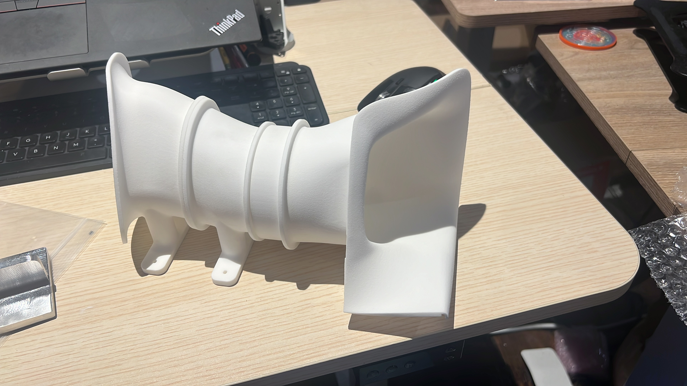
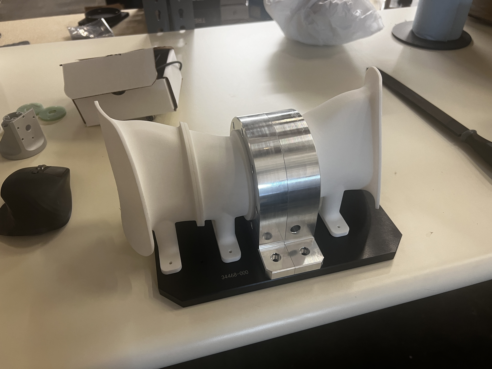
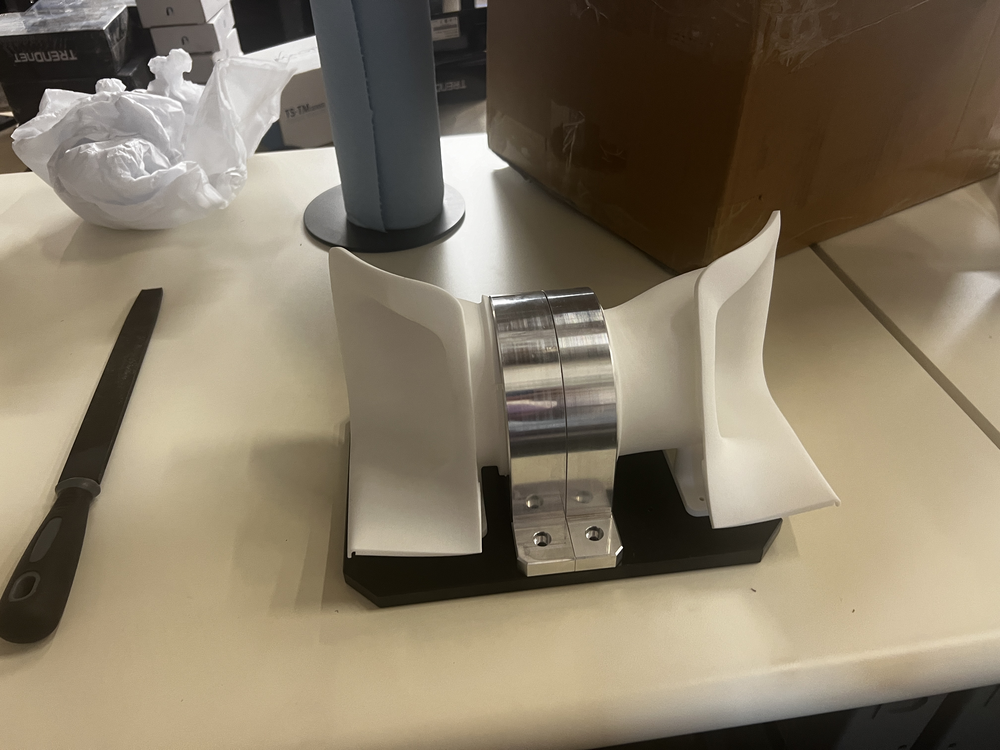
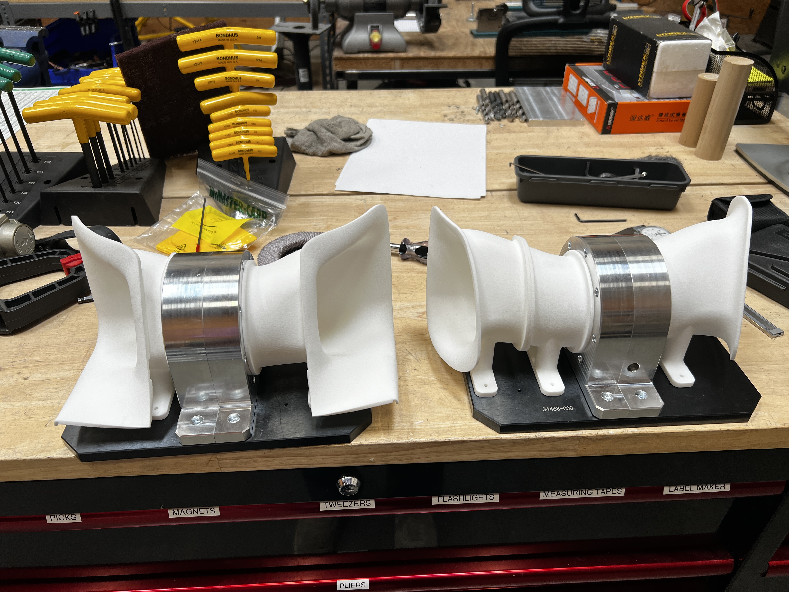
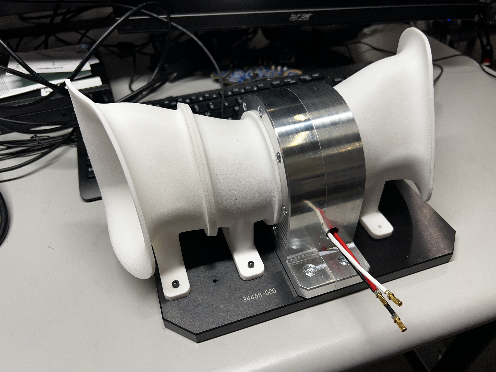
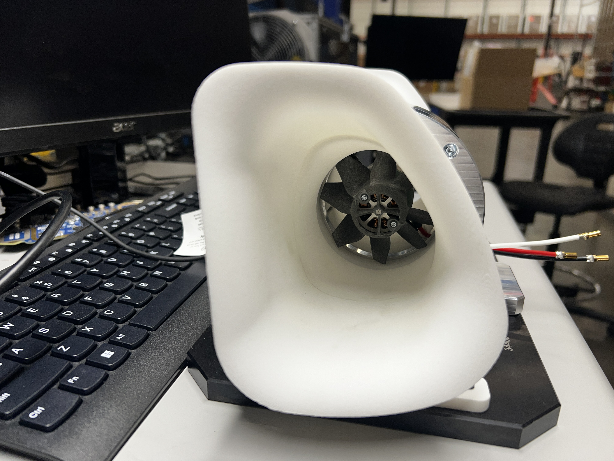
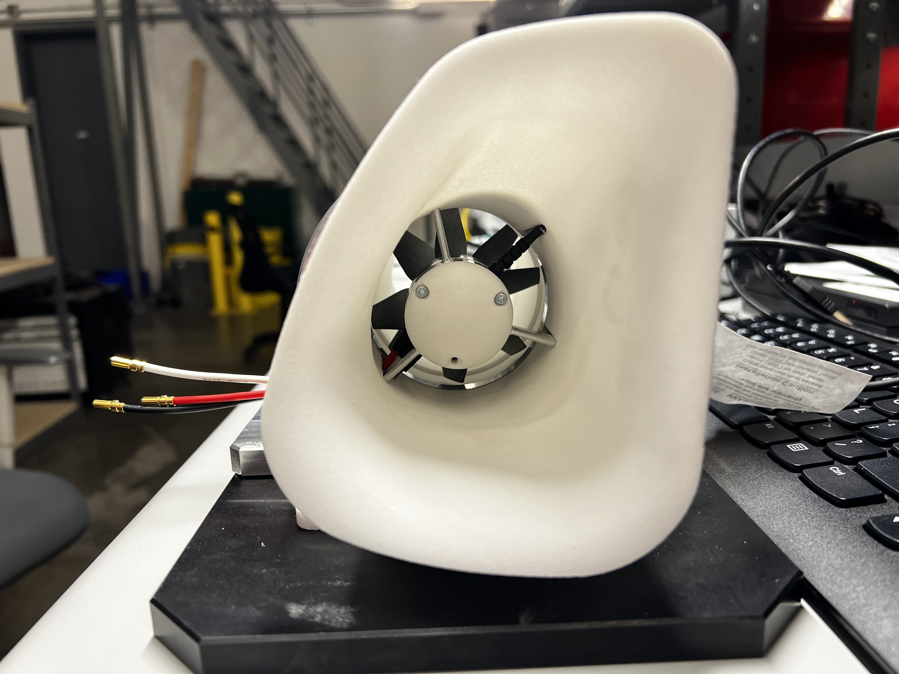
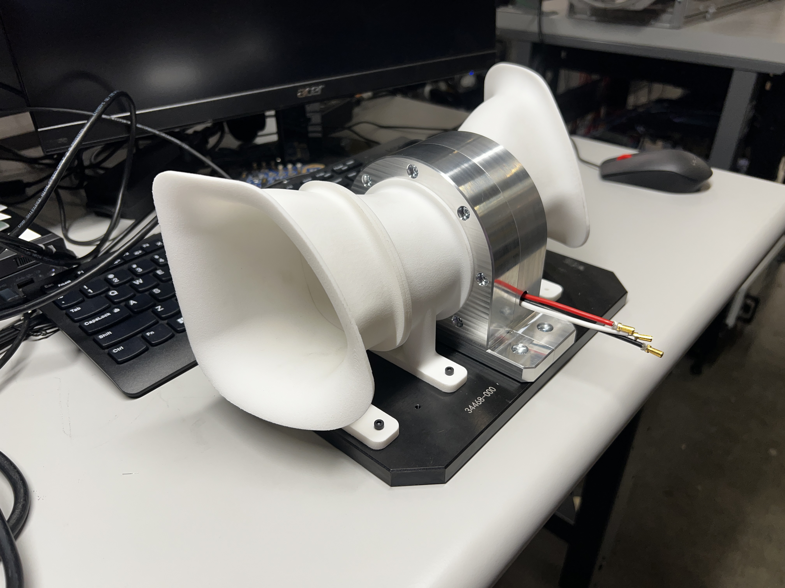
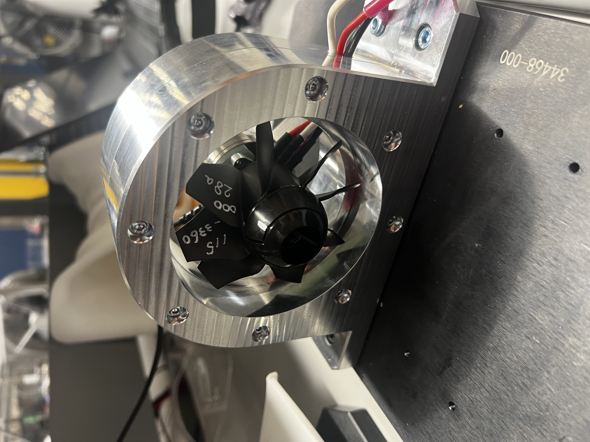
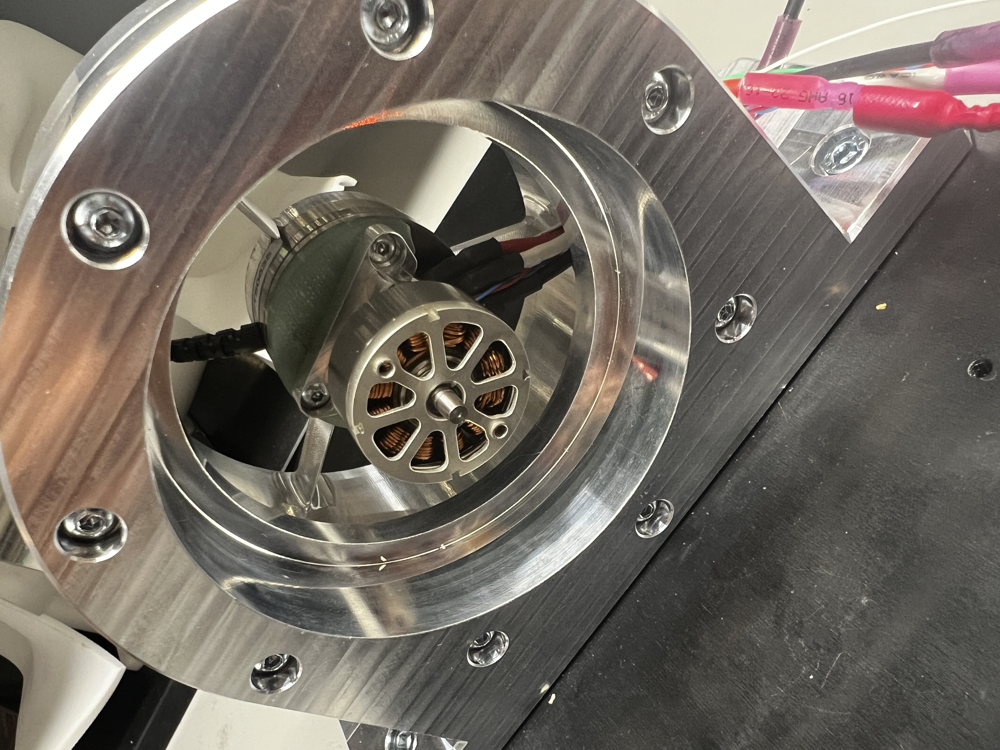
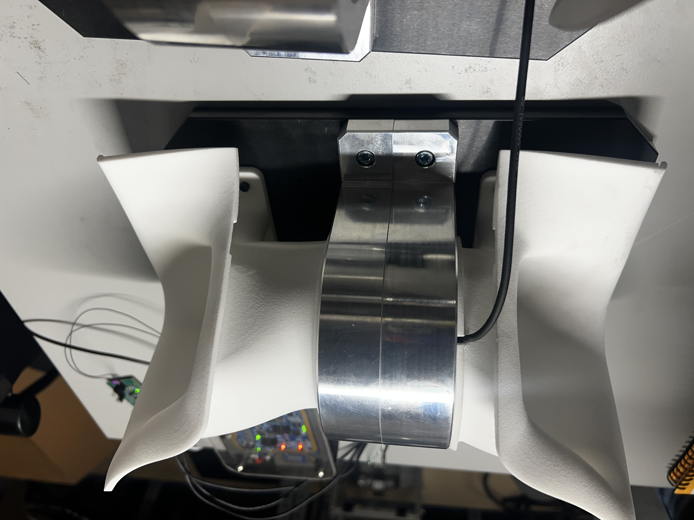
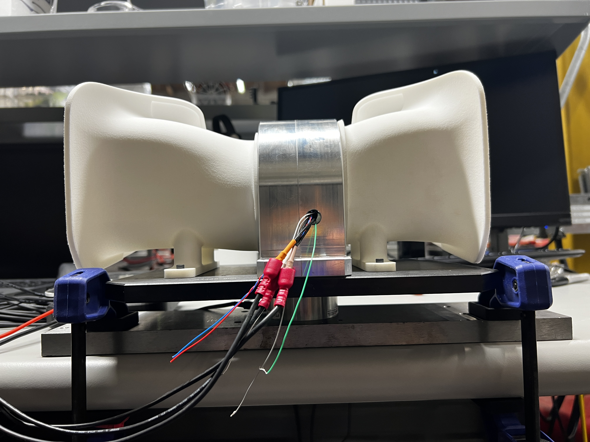
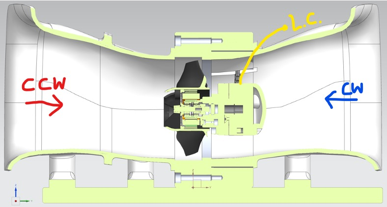
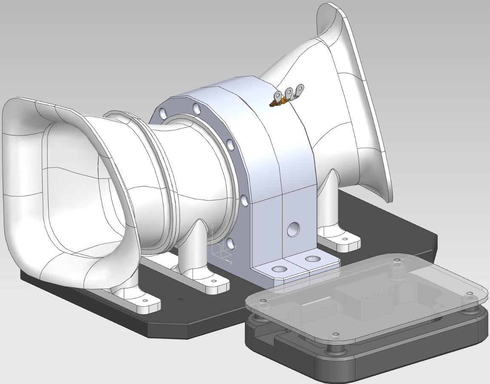
Overview
Building reliable drone propulsion starts with rigorous testing. I developed a thrust stand for a drone delivery startup to validate yaw thruster performance. The thrusters operate inside ducts, generating bidirectional thrust. The system automates endurance, thermal, and vibration testing—delivering high-fidelity data to improve performance and durability.
Technical Details
- Systems: 6DOF load cell, rotary encoder, accelerometers, thermocouple.
- Propulsion: BLDC motor with injection-molded propellers inside ducts.
- Testing Scope: Torque profiling, endurance, thermal, vibration analysis.
- Data Collection: Python-based test app for automated logging.
- Manufacturing: CNC-machined aluminum hub, SLS 3D-printed aero surfaces.
- Simulation & Optimization: CFD, FEA, failure criteria definition.
Development Process
- Concept & Design: Modeled complex aerodynamic surfaces in Siemens NX, ensuring realistic flow behavior over the ducts.
- Prototype & Fabrication: Built the stand from machined aluminum and steel. Used 3D printing to validate airflows before finalizing injection-molded propellers.
- Testing & Data Analysis: Integrated a motor controller, load cell, and encoders to collect torque and thrust data. Wind tunnel tests refined performance.
- Optimization & Refinement: Defined failure criteria and optimized thruster efficiency through CFD, FEA, and vibration testing.
Results
- Reliable Testing Platform - Enabled automated, repeatable tests for thrust and endurance validation.
- Enhanced Performance Insights - Data-driven improvements in thrust efficiency, duct geometry, and motor performance.
- Manufacturing-Ready Design - Designed for DFM/DFA, ensuring smooth transition from prototype to production.